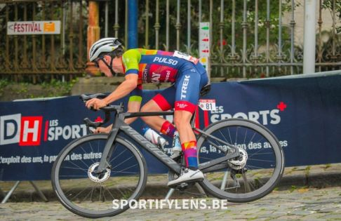

Als sport doe ik wielrennen. Afgelopen seizoen heb ik meegedraait op hoog niveau bij de junioren. Dit leidde tot enkele mooie ereplaatsen. Volgend seizoen zal ik verder doen bij de beloften. Hieronder kan je enkele van mijn beste resultaten van afgelopen seizoen vinden
Hieronder zie je een actiefoto van tijdens Aubel - Thimister - Stavelot
